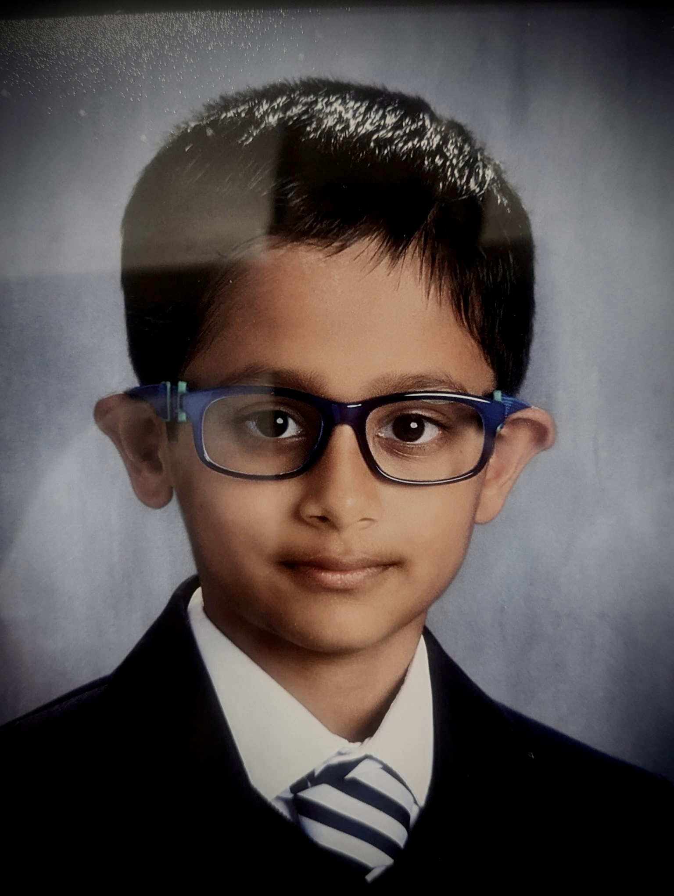

Hi everyone! I'm Mritunjai and I'm currently studying in St.Judes Academy.
My favorite subjects are both maths and science,and my favorite
hobby is to code games but they have not become popular yet.
Still I always keep working and trying my best because I want to become
an entrepreneur so I can earn enough money from my game and jump start my business.
IB is more competitive than other schools with its rigorous program which will help me to achieve my goals
and develop critical thinking, problem solving and communicating abilities which are needed for
developing my business
and also I get to work with people who have same passion as me.
I created a game on roblox called Scary Monster. It's a game were you have to get into a car
to escape the Monsters and get a sword to kill them
before they kill you.But the bad thing about my game is that
the monsters kill each other and the weapons are too big. You can take a sneak peak at
SCary-MOnster .
Although my passion is gaming and coding,I like to try different things. I like learning about EV cars
and I am into competitive swimming,
chess,karate and also I am finishing my first level in piano. I also love acting in plays and I played Timon
in Lion King last year.
I am mostly happy and funny person. I entertain other people at recess, make people happy when they are sad
and also help them with questions,projects,and even studying for exams or tests.
I care about my friends and I will stand up for them and help them when they are stuck on some questions.
I love to communicate
with other people when we have group projects and present them to a wider audience.I need to improve
on being an inquirer
and risk-taker. I am good in math,UOI and gym and need to improve on my language and music. I have
good problem solving capabilities and I can provide many ideas for developing a project.
I created this website from scratch using html and css and I hope you like it.